Inhalt Index DeskTop Bronstein

 Dynamische Systeme und Chaos Bifurkationstheorie, Wege zum Chaos Übergänge zum Chaos
Dynamische Systeme und Chaos Bifurkationstheorie, Wege zum Chaos Übergänge zum Chaos


Analog zur logistischen Gleichung (17.34) kann es auch in zeitkontinuierlichen Systemen zu einer Kaskade von Periodenverdopplungen nach folgendem Szenario kommen. Das System (17.17) besitzt für 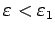 den stabilen periodischen Orbit 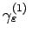. Bei 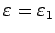 findet nahe 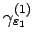 eine Periodenverdopplung statt, bei der der periodische Orbit 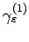 für 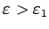 seine Stabilität verliert. Von ihm spaltet sich ein periodischer Orbit 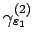 mit etwa doppelter Periode ab. Bei 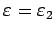 findet erneut eine Periodenverdopplung statt, wobei 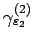 seine Stabilität verliert und ein stabiler Orbit 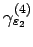 mit nahezu doppelter Periode entsteht. Für wichtige Klassen von Systemen(17.17) setzt sich dieser Prozeß der Periodenverdopplung fort, so daß eine Folge von Parameterwerten 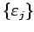 entsteht. Numerische Berechnungen für bestimmte Differentialgleichungen (17.17) (z.B. bei hydrodynamischen Differentialgleichungen wie dem LORENZ-System) belegen die Existenz des Grenzwertes 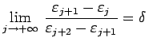, wobei  die FEIGENBAUM-Konstante ist. Bei 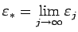 verliert der Zyklus mit unendlicher Periode seine Stabilität, und es kommt zur Bildung eines seltsamen Attraktors.
die FEIGENBAUM-Konstante ist. Bei 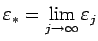 verliert der Zyklus mit unendlicher Periode seine Stabilität, und es kommt zur Bildung eines seltsamen Attraktors.
Der geometrische Hintergrund der Entstehung dieses seltsamen Attraktors in (17.17) durch eine Kaskade von Periodenverdopplungen ist in der folgenden Abbildung zu sehen.
Der POINCARÉ-Schnitt zeigt dabei näherungsweise eine Bäcker-Abbildung, die auf die Entstehung einer CANTOR-Mengen-ähnliche Struktur hindeutet.